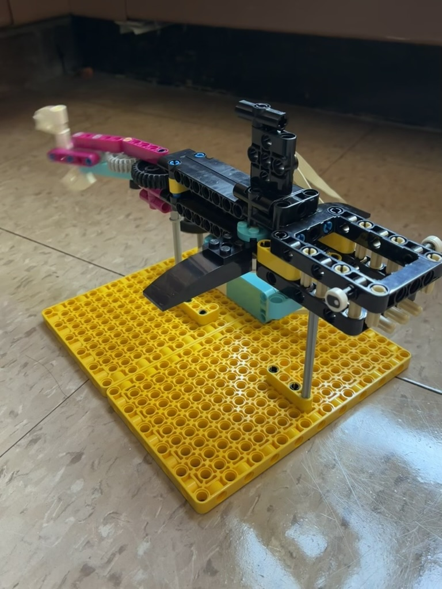

For this project, we were tasked with creating a mechanical system inspired by something living. I thought to myself, "Hey, sharks are pretty cool," so I went ahead and built one out of legos that can mimic a shark's swimming motion.